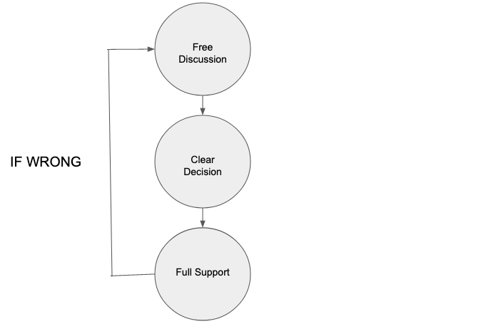

Management is a team game
If you haven’t already read High Output Management - Part I, please do.
Managerial Leverage
As I read this book I just kept thinking that High Output Management was first published in 1983. It is amazing how the concepts and guidelines Andy introduced in his book still hold true. Andy introduced Management By Objectives (MOB) in High Output Management which is used widely across the world and known as planning by Objectives and Key Results (OKRs).
Here is my summary of part II:
How do you measure the output of a manager?
This is a critical concept Andy Grove drives home. He defines how a manager’s output should be measured. It is one of the key concepts which the author revisits multiple times.
Manager’s Output = The output of their organization + The output of neighboring organization under their influence.
Managers can do their job, their individual work and do it well, but that does not constitute their output. If a manager has a group of people reporting to them or a circle of people influenced by them, the manager’s output must be measured by the output created by their subordinates and associates. A coach or a quarterback alone does not score touchdowns and win games. Entire teams with their participation, guidance and directions do.
A manager must keep many balls in the air at the same time and shift their energy and attention to activities that will most increase the output of their organization. In other words, they should move to the point where their leverage is greatest.
Acquiring information is an important task for a manager and there are many ways managers gather this information. The more timely the information, the more valuable it is. Most of this information comes via verbal exchanges during one-on-ones with directs or peers, but it also comes from written reports.
Why are written reports necessary at all?
Reports also have another totally different function. As they are formulated and written the author is forced to be more precise than they might be verbally. Reports are a medium of self-discipline rather than a way to communicate information.
Writing the report is important; reading it often is not.
I_nformation gathering is the basis of all other managerial work, which is why you should spend substantial amount of your time doing it._
How you handle your time is the single most important aspect of being a role model and a leader. Meetings have a bad reputation but, information gathering, information giving, decision making, nudging and being a role model are the activities of a manager and they can’t be performed outside of a meeting.
High Leverage Activities
- When many people are affected by one manager.
- When a person’s activity or behavior over a long period of time is affected by a manager’s brief, well focused set of words or actions.
- When a large group’s work is affected by an individual supplying a unique, key piece of knowledge or information.
The art of management is to be able to prioritize high leverage tasks over others.
Delegation
Delegation without follow through is abdication. You can never wash your hands of a task. Even after you delegate it, you are still responsible for its accomplishment Monitoring a delegated task is the only practical way for you to ensure results.
Increasing Managerial Activity Rate:
- A manager should use their calendar as a “production” planning tool, taking firm initiative to schedule work that is not time-critical between those “limiting steps” in the day.
- You should say “no” at the outset to work beyond your capacity to handle.
- You should allow slack in your calendar.
How many reports should a manager have?
A manager whose work is largely supervisory should have six to eight subordinates; three or four are too few and ten are too many.
Meetings – The Medium Of Managerial Work
A big part of a manager’s work is to supply information and know-how, and to impart a sense of the preferred method of handling things to the groups under their control and influence.
Types of meetings:
Process-Oriented Meetings
In process-oriented meetings knowledge is shared, information is exchanged. These meetings take place on a regularly scheduled basis. People attending this meeting should know how the meeting is run, what kinds of topics are discussed and what is to be accomplished. The One-on-One, the staff/Team meeting and the operation review are some of the examples of process oriented meetings.
One-On-One: Its main purpose is mutual teaching and exchange of information. A one-on-one should be regarded as the subordinate’s meeting, with its agenda and tone set by them. By talking about specific problems and situations, the manager teaches the subordinate his skills and know-how, and suggests ways to approach problems. At the same time, the subordinate provides the manager with detailed information about what they are doing and what they are concerned about.
Staff/Team Meeting: A staff meeting is one in which a manager and all of their subordinates participate, and which therefore presents an opportunity for interaction among peers. Staff meetings create opportunities for the supervisor to learn from the exchange and the confrontation that often develops. What should be discussed in staff meetings? Anything that affects more than two of the people present. The content of the meeting should be mostly controlled, with an agenda issued far enough in advance that the subordinates will have had the chance to prepare their thoughts, but it should also include an open session. What is the role of the manager in the staff meeting? A leader, observer, expediter, questioner, decision maker? The answer is all of them.
Operation Reviews: This is the medium of interaction for people who don’t otherwise have much opportunity to deal with one another. The basic purpose of an operation review is to keep the teaching and learning going between employees several org levels apart and also increase accountability. The format here should include formal presentations in which managers describe their work to their peers and managers who are not their immediate supervisors. The review manager is the senior manager at whom the review is aimed. The review manager has a very important although more subtle role to play. They should ask questions, make comments and in general impart the appropriate spirit to the meeting.
Mission-Oriented Meetings
Mission-oriented meeting is usually held ad-hoc and designed to produce specific output, frequently a decision. So, before calling a mission-oriented meeting ask yourself:
- What am I trying to accomplish?
- Is a meeting necessary or desirable or justifiable?
Don’t call a meeting if all the answers are yes.
Keep in mind that a meeting called to make a specific decision is hard to keep moving if more than six or seven people attend. Eight people should be the absolute cutoff. Decision making is a not a spectator sport, because onlookers get in the way of what needs to be done.
Decisions, Decisions

The Ideal Decision Making Process
First stage of an ideal decision making process should be free discussion, in which all points of view and aspect of an issue are openly welcomed and debated. The greater the disagreement and controversy, the more important becomes the word free.
The next stage is reaching a clear decision. Again the greater the disagreement about the issue more important becomes the word clear.
Finally everyone involved must give the decision reached by the group full support. This does not necessary mean agreement: so long as the participants commit to back the decision, that is a satisfactory outcome.
Another desirable and important feature of the model is that any decision be worked out and reached lowest most competent level. This is where decision will be implemented by people are closest to the situation and know most about it.
Ideally, decision-making should occur in the middle ground, between reliance on technical knowledge on the one hand, and on the bruises one has received from having tried to implement and apply such knowledge on the other.
If you either enter the decision-making stage too early or wait too long, you won’t derive the full benefit of open discussion. The criterion to follow is this: don’t push for decision prematurely. Make sure you have heard and considered the real issues rather than the superficial comments that often dominate the early part of a meeting. But if you feel that you have already heard everything, that all sides of the issue have been raised, it is time to push for a consensus.
One of manager’s key tasks is to settle six important questions in advance:
- What decision needs to be made?
- When does it have to be made by?
- Who will decide?
- Who will need to be consulted prior to making the decision?
- Who will ratify or veto the decision?
- Who will need to be informed of the decision?
Planning: Today’s Actions for Tomorrow’s Output
Your general planning process should consist of analogous thinking. Step 1 is to establish projected need or demand. Step 2 is to establish your present status (where will your business be if you do nothing different from what you are doing?) Step 3 is to compare and reconcile steps 1 and 2. What more or less you need to do to produce what your environment will demand.
Management By Objectives: The Planning Process Applied to Daily Work
The idea behind MBO is extremely simple. If you don’t know where you are going you will not get there.
Successful MBO system needs only to answer two questions:
Where do I want to go? (The answer provides the objective)
How will I pace myself to see if I’m getting there? (The answer gives us milestones, or key results)
To illustrate an objective and key result, consider the following: I want to go to the airport to catch a plane in an hour. That is my objective. I know that I must drive through towns A, B and C on my way there. My key results become reaching A, B and C in 10, 20 and 30 minutes respectively. If I have been driving for 20 minutes and haven’t yet made to town A, I know I’m lost.
If we plan on a yearly basis, the corresponding MBO system’s time frame should be at least as often as quarterly or perhaps event monthly.
The one thing an MBO system should provide par excellence is focus. This can only happen if we keep the number of objectives small.